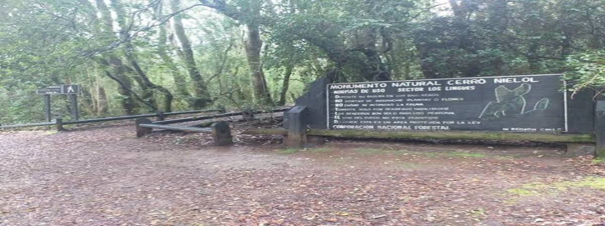
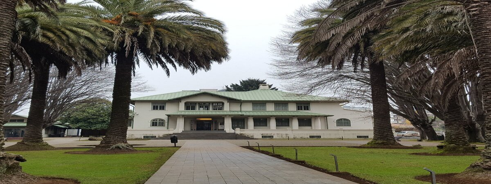
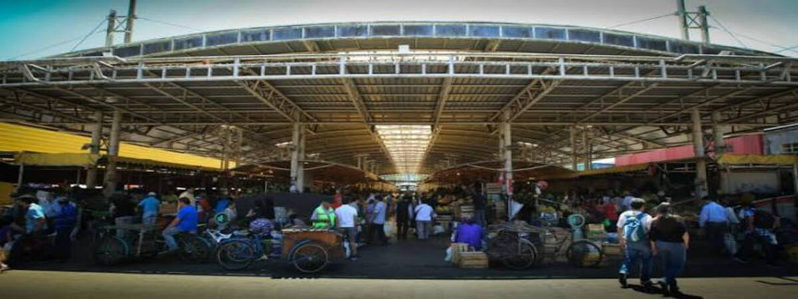
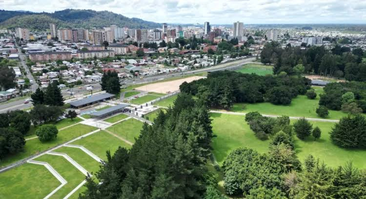
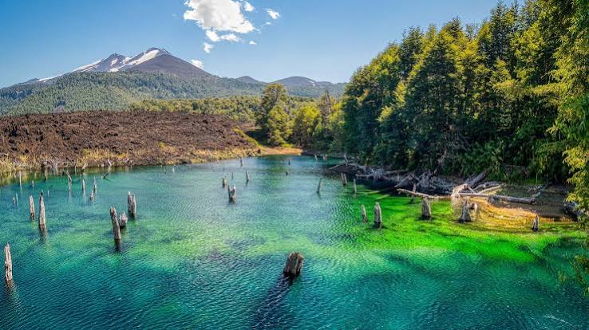

Sendero Ñielol
Naturaleza • Parque Ñielol, Temuco
Duración: 1 hr 30 min · Dificultad: Moderada
Turismo Sustentable en La Araucanía
Explora senderos, ferias agroecológicas y espacios patrimoniales diseñados para un turismo consciente y respetuoso con el medio ambiente.

Naturaleza • Parque Ñielol, Temuco
Duración: 1 hr 30 min · Dificultad: Moderada

Cultura • Av. Alemania 0842, Temuco
Duración: 1 hr · Dificultad: Fácil

Gastronomía • Plaza Aníbal Pinto
Duración: 45 min · Dificultad: Fácil

Naturaleza • Av. los Poetas, Temuco
Duración: 1-2 hrs · Dificultad: Fácil

Naturaleza • Melipeuco / Curacautín
Duración: Día completo · Dificultad: Moderada